¿Están los modelos alineados con la percepción humana?
¿Están los modelos
alineados con la
percepción humana?
Christian Velásquez Borasino
Charla inspirada en una conferencia de David Fleet
¿Qué ven aquí?
¿Qué ven aquí?
01 / 24
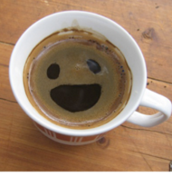
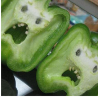
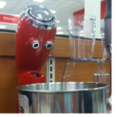
Una experiencia cotidiana
Wardle et al. (2020), Fig. 1a. Recortes del estímulo original
Una imagen, dos interpretaciones
Una imagen, dos interpretaciones
02 / 24

¿Pato? ¿Conejo?
Jaini, Clark y Geirhos (2024), Fig. 7. Estímulo original
Percepción Organizar e interpretar la información que recibimos ¿Qué interpretaciones comparten los modelos y las personas?
03 / 24
Percepción
Organizar e interpretar
la información que recibimos
¿Qué interpretaciones comparten los modelos y las personas?
¿Qué animal reconocen?
¿Qué animal reconocen?
04 / 24
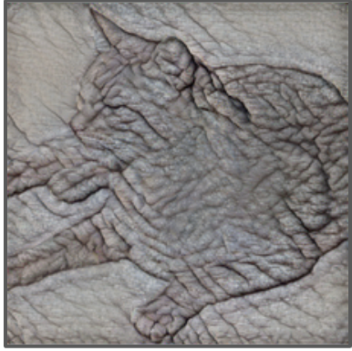
Forma de gato
Textura de elefante
Jaini, Clark y Geirhos (2024), Fig. 1. Recorte
¿Cómo funcionan los modelos de difusión?
¿Cómo funcionan los modelos de difusión?
1 Aprender a quitar ruido
Imagen + ruido → predecir el ruido añadido
2 Generar una imagen
Ruido → quitar ruido paso a paso → imagen
Ho, Jain y Abbeel (2020) · Esquema original del artículo
05 / 24
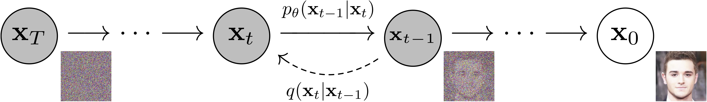
Clasificar con un modelo de difusión
Clasificar con un modelo de difusión
06 / 24

1 Probar una categoría
Condicionar la eliminación de ruido
con «gato» o «elefante».
2 Comparar el error
Elegir la categoría con menor
error de eliminación de ruido.
Clark y Jaini (2023), Fig. 1. Descripción didáctica del método
Imagen favorece la forma
¿Se equivocan en las mismas imágenes?
¿Se equivocan en las mismas imágenes?
08 / 24
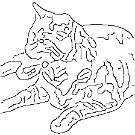
Modelo
Persona
«Gato»
«Gato»
Referencia: gato · contornos
Ambos aciertan → coincidencia
Coincidir es acertar o fallar en la misma imagen.
Estímulos: Geirhos et al. (2019), model-vs-human · Personajes: OpenMoji, CC BY-SA 4.0
«Gato»
«Oso»
Referencia: perro · silueta
Ambos fallan → coincidencia
Coincidir es acertar o fallar en la misma imagen.
Estímulos: Geirhos et al. (2019), model-vs-human · Personajes: OpenMoji, CC BY-SA 4.0
κ: coincidencia de acierto y error, corregida por azar
Jaini, Clark y Geirhos (2024), Tabla 1. Selección
Consistencia de errores
Consistencia de errores
09 / 24
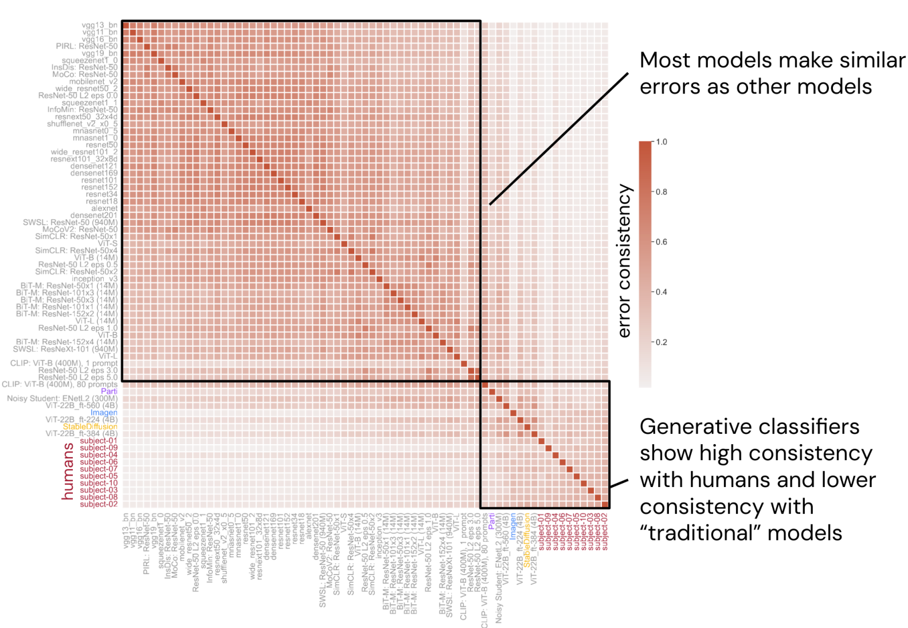
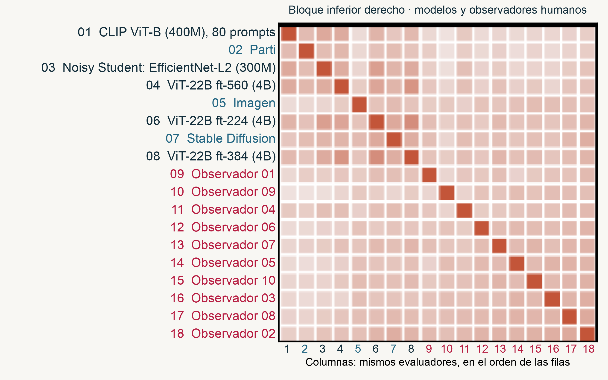
Jaini, Clark y Geirhos (2024), Fig. 6. Figura completa y ampliación
Conflicto forma–textura · κ de acierto/error
Dos reconstrucciones guiadas por el prompt
Dos reconstrucciones guiadas por el prompt
10 / 24
Estímulo
Prompt: conejo
Prompt: pato
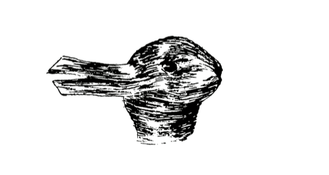
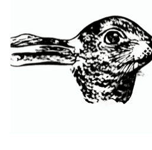
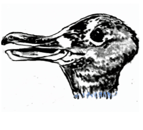
La instrucción favorece una interpretación compatible con la imagen
Jaini, Clark y Geirhos (2024), Fig. 7. Estímulo y salidas de Imagen
Reconstrucciones de la roca con Imagen
Reconstrucciones de la roca con Imagen
11 / 24
Entrada
“An image of a face.”
“A rock.”
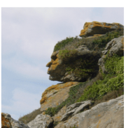
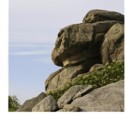
Las reconstrucciones responden a la instrucción
Jaini, Clark y Geirhos (2024), Fig. 7. Entrada y salidas originales de Imagen
Un modelo de video ante una imagen Una entrada visual y una instrucción para producir una transformación Veo 3 · Wiedemer et al. (2025)
12 / 24
Un modelo de video
ante una imagen
Una entrada visual y una instrucción
para producir una transformación
Veo 3 · Wiedemer et al. (2025)
Galería visual
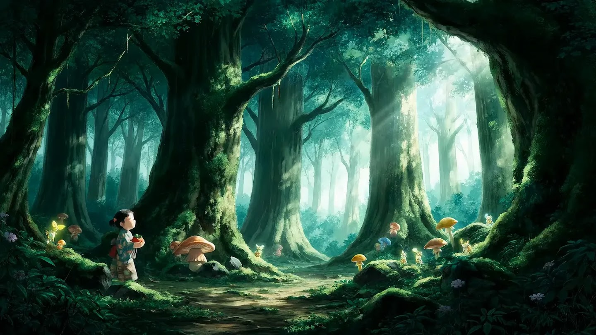
Contornos de la escena
Contornos de la escena
13 / 24
Entrada
Video generado
11/12
Éxitos según los autores
Prompt · resumen
Turn all edges into black outlines on a white background. Static camera.
Separar objetos en regiones
Separar objetos en regiones
14 / 24
Entrada
Video generado
4/12
Éxitos según los autores
Prompt · resumen
Cover each distinct object with a different flat color, preserving its silhouette. Static camera.
Reconocer al animal
Reconocer al animal
15 / 24
Entrada
Video generado
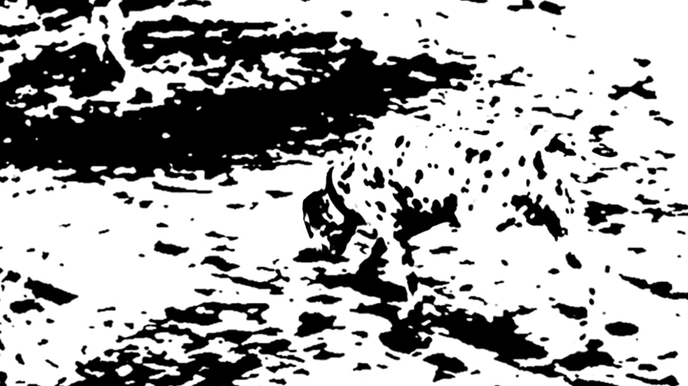
12/12
Éxitos según los autores
Prompt
Static camera perspective.
La forma ante una textura diferente
La forma ante una textura diferente
16 / 24
Entrada
Video generado
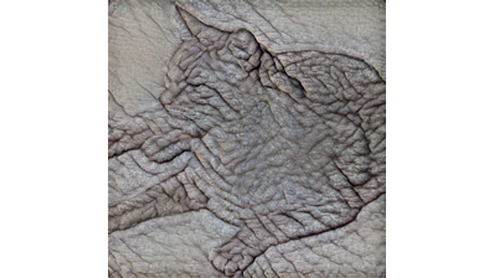
12/12
Éxitos según los autores
Prompt
Transform the animal in this image into a sketch of the animal surrounded by its family.
Modelos de lenguaje
Modelos de lenguaje
LLMs · Large Language Models
Ambigüedad, ironía e intención
¿Interpretan el lenguaje como nosotros?
17 / 24
Ambigüedad durante la lectura
Ambigüedad durante la lectura
Frase ambigua
While the boy washed the dog barked loudly.
Did the boy wash the dog?
Respuesta: no
Frase reformulada
The dog barked loudly while the boy washed.
18 / 24
Amouyal, Meltzer-Asscher y Berant (ACL 2025) · Fig. 1
¿Se confunden en las mismas condiciones?
¿Se confunden en las mismas condiciones?
19 / 24
Amouyal, Meltzer-Asscher y Berant (ACL 2025) · Fig. 1
El contexto cambia el significado
El contexto cambia el significado
20 / 24
Dos hijos discuten en el asiento trasero. Su padre comenta:
“Oh, it is so pleasant here.”
Lectura literal
Disfruta escuchando
la discusión.
Lectura pragmática
Le molesta la discusión
y quiere que termine.
Hu et al. (2023), Tabla 1. Cita original, contexto y lecturas adaptados
Aciertos en comprensión del lenguaje
Aciertos en comprensión del lenguaje
Misma medida: proporción de respuestas correctas
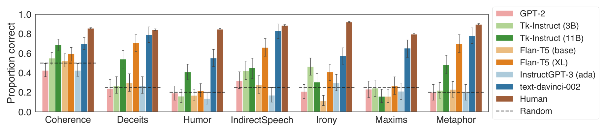
Hu et al. (ACL 2023) · Fig. 1 original · Resultados de modelos de 2023
21 / 24
Ambigüedad en preguntas
Ambigüedad en preguntas
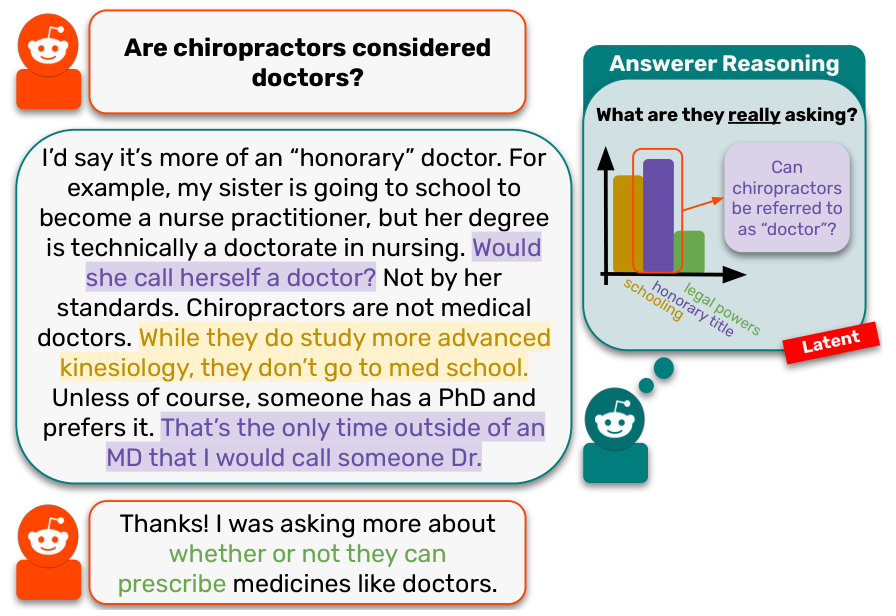
La respuesta explica título y formación; la pregunta era si podían recetar.
Srikanth et al. (ACL 2025) · Fig. 1 original
22 / 24
Los modelos cubren más interpretaciones
Los modelos cubren más interpretaciones
23 / 24
Fracción de interpretaciones abordadas por respuesta
Srikanth et al. (2025), §6 y Tabla 1. Promedios de humanos y doce LLMs
¿Están los modelos alineados con la percepción humana?
¿Están los modelos alineados con la percepción humana?
24 / 24
Sí, parcialmente.
Alineación en forma y dificultades de lectura
Imagen prioriza la forma; Gemma-2-9B muestra dificultades similares en frases ambiguas.
Brechas en ironía y preguntas ambiguas
Los modelos estudiados aciertan menos en ironía y pueden elegir otras lecturas.
Veo 3 resuelve tareas visuales; estas demos no comparan su percepción con humanos.
Referencias
Referencias
Wardle et al. (2020)
Rapid and dynamic processing of face pareidolia in the human brain
Clark y Jaini (2023)
Text-to-Image Diffusion Models are Zero-Shot Classifiers
Jaini, Clark y Geirhos (2024)
Intriguing Properties of Generative Classifiers
Wiedemer et al. (2025)
Video models are zero-shot learners and reasoners
Amouyal et al. (2025)
When the LM misunderstood the human chuckled: Analyzing garden path effects in humans and language models
Hu et al. (2023)
A fine-grained comparison of pragmatic language understanding in humans and language models
Srikanth et al. (2025)
No Questions are Stupid, but some are Poorly Posed: Understanding Poorly-Posed Information-Seeking Questions